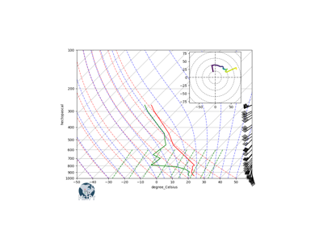
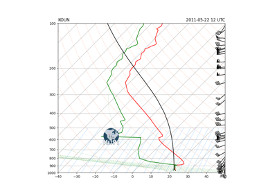

Plotting# Examples using MetPy’s various specialty plotting routines. Simple Plotting Simple Plotting US Counties US Counties Raster Plots using Declarative Syntax Raster Plots using Declarative Syntax Simple Plotting of Fronts Simple Plotting of Fronts NOAA SPC Convective Outlook NOAA SPC Convective Outlook Combined Plotting Combined Plotting Surface Analysis using Declarative Syntax Surface Analysis using Declarative Syntax Upper Air Analysis using Declarative Syntax Upper Air Analysis using Declarative Syntax NOAA NHC Wind Speed Probabilities NOAA NHC Wind Speed Probabilities Skew-T with Complex Layout Skew-T with Complex Layout  Hodograph Inset Hodograph Inset  Sounding as Dataset Example Sounding as Dataset Example Plotting Fronts Plotting Fronts Simple Sounding Simple Sounding Mesonet Station Plot Mesonet Station Plot Station Plot Station Plot Station Plot with Layout Station Plot with Layout